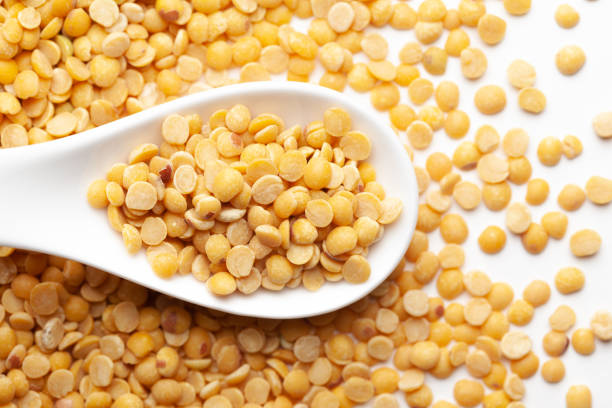
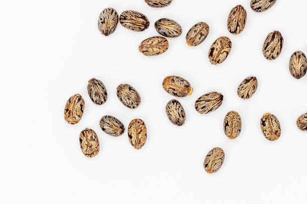
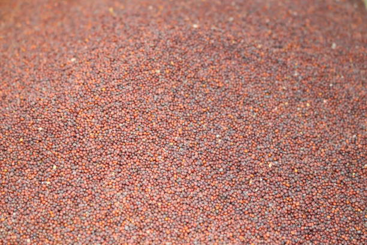
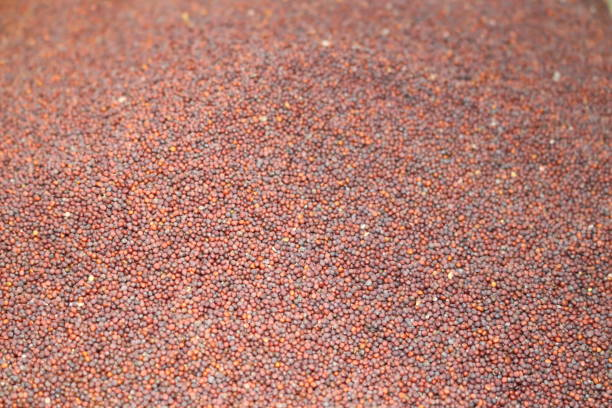
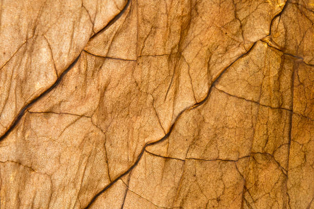
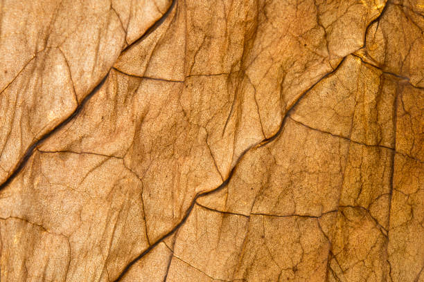

1. ARHAR / 1.અરહર

Arhar, or pigeon pea, is primarily grown in Gujarat during the Kharif season (June to September). It is widely cultivated in Maharashtra and Karnataka, where demand is high. Arhar thrives in well-drained sandy or loamy soil with a pH of 6.0-7.5. Ideal soil temperature is around 25-30°C. Nutritionally, it’s rich in protein, fiber, and essential minerals. The growing season lasts approximately 4-6 months, from planting to harvest. Resources needed include moderate water, fertilizers, and pest management. Demand is notably high in states like Maharashtra, Madhya Pradesh, and Tamil Nadu, making it a valuable crop in the region.
અરહર, અથવા કબૂતરના વટાણા, મુખ્યત્વે ગુજરાતમાં ખરીફ સીઝન (જૂન થી સપ્ટેમ્બર) દરમિયાન ઉગાડવામાં આવે છે. તે મહારાષ્ટ્ર અને કર્ણાટકમાં વ્યાપકપણે ઉગાડવામાં આવે છે, જ્યાં માંગ વધુ છે. અરહર 6.0-7.5 ની pH સાથે સારી રીતે નિકાલવાળી રેતાળ અથવા લોમી જમીનમાં ખીલે છે. આદર્શ માટીનું તાપમાન આશરે 25-30 ° સે છે. પોષણની રીતે, તે પ્રોટીન, ફાઇબર અને આવશ્યક ખનિજોથી સમૃદ્ધ છે. વધતી મોસમ વાવેતરથી લણણી સુધી લગભગ 4-6 મહિના ચાલે છે. જરૂરી સંસાધનોમાં મધ્યમ પાણી, ખાતરો અને જંતુ વ્યવસ્થાપનનો સમાવેશ થાય છે. મહારાષ્ટ્ર, મધ્યપ્રદેશ અને તમિલનાડુ જેવા રાજ્યોમાં માંગ નોંધપાત્ર રીતે ઊંચી છે, જે તેને આ પ્રદેશમાં મૂલ્યવાન પાક બનાવે છે.
2. GREEN GRAM(MOONG) / 2.લીલો ગ્રામ


Green gram (moong) is primarily grown in Gujarat during the Kharif season (June to September) and Rabi season (October to February). It is most cultivated in Maharashtra and Karnataka, with significant market shares in these states. Moong thrives in well-drained sandy loam or loamy soil with a pH of 6.0-7.5. Ideal soil temperature ranges from 25-30°C. Nutritionally, it is high in protein, fiber, and vitamins. The growing period is about 60-90 days, requiring moderate water and minimal fertilizers. Demand is particularly high in Maharashtra, Karnataka, and Tamil Nadu, making it a valuable crop in these regions.
ગુજરાતમાં મુખ્યત્વે ખરીફ સીઝન (જૂન થી સપ્ટેમ્બર) અને રવિ સીઝન (ઓક્ટોબર થી ફેબ્રુઆરી) દરમિયાન લીલા ચણા (મગ) ઉગાડવામાં આવે છે. મહારાષ્ટ્ર અને કર્ણાટકમાં તેની સૌથી વધુ ખેતી થાય છે, આ રાજ્યોમાં નોંધપાત્ર બજાર હિસ્સો છે. મૂંગ 6.0-7.5 ની pH સાથે સારી રીતે પાણીયુક્ત રેતાળ લોમ અથવા લોમવાળી જમીનમાં ખીલે છે. આદર્શ માટીનું તાપમાન 25-30 ° સે છે. પોષણની રીતે, તેમાં પ્રોટીન, ફાઇબર અને વિટામિન્સ વધુ હોય છે. વૃદ્ધિનો સમયગાળો લગભગ 60-90 દિવસનો છે, જેમાં મધ્યમ પાણી અને ન્યૂનતમ ખાતરોની જરૂર પડે છે. મહારાષ્ટ્ર, કર્ણાટક અને તમિલનાડુમાં માંગ ખાસ કરીને ઊંચી છે, જે આ પ્રદેશોમાં મૂલ્યવાન પાક બનાવે છે.
3. URAD / 3.અડદ

Urad (black gram) is primarily grown in Gujarat during the Kharif season (June to September). It is mostly cultivated and sold in states like Maharashtra and Tamil Nadu. Urad thrives in well-drained sandy or loamy soil with a pH of 6.0-8.0. The ideal soil temperature ranges from 25-30°C. Nutritionally, urad is rich in protein, fiber, and iron. The growing period is about 70-90 days, requiring moderate water and low fertilizer inputs. Demand for urad is particularly high in Maharashtra, Andhra Pradesh, and Tamil Nadu, making it an important pulse crop in these regions.
અડદ (કાળા ચણા) મુખ્યત્વે ગુજરાતમાં ખરીફ સીઝન (જૂન થી સપ્ટેમ્બર) દરમિયાન ઉગાડવામાં આવે છે. તે મોટાભાગે મહારાષ્ટ્ર અને તમિલનાડુ જેવા રાજ્યોમાં ઉગાડવામાં આવે છે અને વેચાય છે. અડદ 6.0-8.0 ની pH સાથે સારી રીતે નિકાલવાળી રેતાળ અથવા ચીકણી જમીનમાં ઉગે છે. આદર્શ માટીનું તાપમાન 25-30 ° સે છે. પોષણની રીતે, અડદમાં પ્રોટીન, ફાઇબર અને આયર્ન ભરપૂર માત્રામાં હોય છે. વૃદ્ધિનો સમયગાળો લગભગ 70-90 દિવસનો હોય છે, જેમાં મધ્યમ પાણી અને ઓછા ખાતરની જરૂર પડે છે. ખાસ કરીને મહારાષ્ટ્ર, આંધ્રપ્રદેશ અને તમિલનાડુમાં અડદની માંગ વધારે છે, જે તેને આ પ્રદેશોમાં એક મહત્વપૂર્ણ કઠોળ પાક બનાવે છે.
4. GROUNDNUT / 4.મગફળી


Groundnut is primarily grown in Gujarat during the Kharif season (June to September) and Rabi season (November to January). It is most cultivated in Gujarat and sold widely in Maharashtra and Tamil Nadu. Groundnut thrives in well-drained sandy loam or loamy soil with a pH of 6.0-6.5. The ideal soil temperature is around 25-30°C. Nutritionally, groundnut is high in protein, healthy fats, and vitamins. The growing period is about 120-140 days, requiring moderate water and fertilizers. Demand is particularly high in states like Maharashtra, Andhra Pradesh, and Tamil Nadu, making it a significant oilseed crop.
ગુજરાતમાં મગફળી મુખ્યત્વે ખરીફ સીઝન (જૂન થી સપ્ટેમ્બર) અને રવિ સીઝન (નવેમ્બર થી જાન્યુઆરી) દરમિયાન ઉગાડવામાં આવે છે. તે ગુજરાતમાં સૌથી વધુ ઉગાડવામાં આવે છે અને મહારાષ્ટ્ર અને તમિલનાડુમાં વ્યાપકપણે વેચાય છે. મગફળી 6.0-6.5 પીએચ સાથે સારી રીતે પાણીયુક્ત રેતાળ લોમ અથવા લોમવાળી જમીનમાં ખીલે છે. આદર્શ માટીનું તાપમાન લગભગ 25-30 ° સે છે. પોષક રીતે, મગફળીમાં પ્રોટીન, તંદુરસ્ત ચરબી અને વિટામિન્સ વધુ હોય છે. વૃદ્ધિનો સમયગાળો લગભગ 120-140 દિવસનો છે, જેમાં મધ્યમ પાણી અને ખાતરોની જરૂર પડે છે. મહારાષ્ટ્ર, આંધ્રપ્રદેશ અને તમિલનાડુ જેવા રાજ્યોમાં માંગ ખાસ કરીને ઊંચી છે, જે તેને નોંધપાત્ર તેલીબિયાં પાક બનાવે છે.
5. SESAME / 5. તલ


Sesame is primarily grown in Gujarat during the Kharif season (June to September). It is most cultivated in Gujarat and has significant market shares in Maharashtra and Rajasthan. Sesame thrives in well-drained sandy loam or loamy soil with a pH of 6.0-7.5. The ideal soil temperature ranges from 25-30°C. Nutritionally, sesame is rich in healthy fats, protein, and minerals. The growing period is about 90-120 days, requiring moderate water and minimal fertilizers. Demand for sesame is particularly high in states like Maharashtra, Tamil Nadu, and Andhra Pradesh, making it an important oilseed crop in India.
ગુજરાતમાં તલ મુખ્યત્વે ખરીફ સીઝન (જૂન થી સપ્ટેમ્બર) દરમિયાન ઉગાડવામાં આવે છે. તે ગુજરાતમાં સૌથી વધુ ઉગાડવામાં આવે છે અને મહારાષ્ટ્ર અને રાજસ્થાનમાં તેનો નોંધપાત્ર બજાર હિસ્સો છે. તલ 6.0-7.5 ની pH સાથે સારી રીતે પાણીયુક્ત રેતાળ લોમ અથવા લોમવાળી જમીનમાં ખીલે છે. આદર્શ માટીનું તાપમાન 25-30 ° સે છે. પોષણની રીતે, તલ તંદુરસ્ત ચરબી, પ્રોટીન અને ખનિજોથી સમૃદ્ધ છે. વૃદ્ધિનો સમયગાળો લગભગ 90-120 દિવસનો છે, જેમાં મધ્યમ પાણી અને ન્યૂનતમ ખાતરોની જરૂર પડે છે. મહારાષ્ટ્ર, તમિલનાડુ અને આંધ્રપ્રદેશ જેવા રાજ્યોમાં તલની માંગ ખાસ કરીને ઊંચી છે, જે તેને ભારતમાં મહત્વનો તેલીબિયાં પાક બનાવે છે.
6. CASTOR SEED / 6.એરંડાનું બીજ


Castor seed is primarily grown in Gujarat during the Kharif season (June to September). It is most cultivated in Gujarat, with significant market shares in states like Andhra Pradesh and Rajasthan. Castor thrives in well-drained sandy loam or loamy soil with a pH of 6.0-7.5. The ideal soil temperature ranges from 25-30°C. Nutritionally, castor seeds are rich in oil but are toxic when raw. The growing period is about 90-120 days, requiring moderate water and minimal fertilizers. Demand for castor oil is particularly high in Maharashtra, Andhra Pradesh, and Gujarat, making it an important oilseed crop in India.
એરંડાનું બીજ ગુજરાતમાં મુખ્યત્વે ખરીફ સીઝન (જૂન થી સપ્ટેમ્બર) દરમિયાન ઉગાડવામાં આવે છે. આંધ્રપ્રદેશ અને રાજસ્થાન જેવા રાજ્યોમાં નોંધપાત્ર બજાર હિસ્સા સાથે ગુજરાતમાં તેની સૌથી વધુ ખેતી થાય છે. એરંડા 6.0-7.5 ની pH સાથે સારી રીતે પાણીયુક્ત રેતાળ લોમ અથવા લોમવાળી જમીનમાં ખીલે છે. આદર્શ માટીનું તાપમાન 25-30 ° સે છે. પોષક રીતે, એરંડાના બીજ તેલથી ભરપૂર હોય છે પરંતુ કાચા હોય ત્યારે તે ઝેરી હોય છે. વૃદ્ધિનો સમયગાળો લગભગ 90-120 દિવસનો છે, જેમાં મધ્યમ પાણી અને ન્યૂનતમ ખાતરોની જરૂર પડે છે. દિવેલની માંગ ખાસ કરીને મહારાષ્ટ્ર, આંધ્રપ્રદેશ અને ગુજરાતમાં વધુ છે, જે તેને ભારતમાં મહત્વનો તેલીબિયાં પાક બનાવે છે.
7. MUSTARD / 7.મસ્ટર્ડ
 

Mustard is primarily grown in Gujarat during the Rabi season (October to March). It is most cultivated in states like Rajasthan and Haryana, with significant market shares in Punjab and Madhya Pradesh. Mustard thrives in well-drained loamy or sandy loam soil with a pH of 6.0-7.5. The ideal soil temperature ranges from 15-20°C. Nutritionally, mustard seeds are rich in oil, protein, and essential fatty acids. The growing period is about 90-150 days, requiring moderate water and fertilizers. Demand for mustard oil is particularly high in states like Uttar Pradesh, Rajasthan, and Gujarat, making it a key oilseed crop.
ગુજરાતમાં રવી સિઝન (ઓક્ટોબરથી માર્ચ) દરમિયાન સરસવની ખેતી મુખ્યત્વે થાય છે. પંજાબ અને મધ્ય પ્રદેશમાં નોંધપાત્ર બજાર હિસ્સા સાથે રાજસ્થાન અને હરિયાણા જેવા રાજ્યોમાં તેની સૌથી વધુ ખેતી થાય છે. સરસવ 6.0-7.5 ની pH સાથે સારી રીતે નિકાલવાળી લોમી અથવા રેતાળ લોમ જમીનમાં ઉગે છે. આદર્શ માટીનું તાપમાન 15-20 ° સે છે. પોષક રીતે, સરસવના દાણા તેલ, પ્રોટીન અને આવશ્યક ફેટી એસિડથી સમૃદ્ધ છે. વૃદ્ધિનો સમયગાળો લગભગ 90-150 દિવસનો છે, જેમાં મધ્યમ પાણી અને ખાતરોની જરૂર પડે છે. ઉત્તર પ્રદેશ, રાજસ્થાન અને ગુજરાત જેવા રાજ્યોમાં સરસવના તેલની માંગ ખાસ કરીને ઊંચી છે, જે તેને મુખ્ય તેલીબિયાં પાક બનાવે છે.
8. COTTON / 8.કપાસb


Cotton is primarily grown in Gujarat during the Kharif season (June to October). It is the largest producer in India, with significant market shares in Maharashtra and Telangana. Cotton thrives in well-drained black or sandy loam soils with a pH of 6.0-7.5. The ideal soil temperature ranges from 20-30°C. Nutritionally, cotton seeds are high in oil and protein. The growing period is about 150-180 days, requiring moderate water and fertilizers. Demand for cotton is particularly high in Maharashtra, Gujarat, and Andhra Pradesh, making it a crucial cash crop for the textile industry in India.
ગુજરાતમાં કપાસની ખેતી મુખ્યત્વે ખરીફ સિઝન (જૂન થી ઓક્ટોબર) દરમિયાન થાય છે. તે મહારાષ્ટ્ર અને તેલંગાણામાં નોંધપાત્ર બજાર હિસ્સા સાથે ભારતમાં સૌથી મોટો ઉત્પાદક છે. કપાસ 6.0-7.5 પીએચ સાથે સારી રીતે નિકાલવાળી કાળી અથવા રેતાળ લોમ જમીનમાં ખીલે છે. આદર્શ માટીનું તાપમાન 20-30 ° સે છે. પોષણની દૃષ્ટિએ કપાસના બીજમાં તેલ અને પ્રોટીનનું પ્રમાણ વધુ હોય છે. વૃદ્ધિનો સમયગાળો લગભગ 150-180 દિવસનો છે, જેમાં મધ્યમ પાણી અને ખાતરોની જરૂર પડે છે. મહારાષ્ટ્ર, ગુજરાત અને આંધ્રપ્રદેશમાં કપાસની માંગ ખાસ કરીને ઊંચી છે, જે તેને ભારતના કાપડ ઉદ્યોગ માટે નિર્ણાયક રોકડ પાક બનાવે છે.
9. SUGARCANE / 9.શેરડી


Sugarcane is primarily grown in Gujarat during the Rabi season (October to March). It is widely cultivated in Maharashtra and Uttar Pradesh, which have significant market shares. Sugarcane thrives in well-drained loamy or sandy soils with a pH of 6.0-8.0. The ideal soil temperature ranges from 20-30°C. Nutritionally, sugarcane is rich in carbohydrates, primarily sucrose. The growing period is about 12-18 months, requiring substantial water and fertilizers. Demand for sugarcane is particularly high in states like Maharashtra, Karnataka, and Uttar Pradesh, making it a vital crop for sugar production and related industries in India.
ગુજરાતમાં શેરડીનું વાવેતર મુખ્યત્વે રવિ સિઝન (ઓક્ટોબરથી માર્ચ) દરમિયાન થાય છે. તે મહારાષ્ટ્ર અને ઉત્તર પ્રદેશમાં વ્યાપકપણે ઉગાડવામાં આવે છે, જેમાં નોંધપાત્ર બજાર હિસ્સો છે. શેરડી 6.0-8.0 ની pH સાથે સારી રીતે નિકાલવાળી લોમી અથવા રેતાળ જમીનમાં ખીલે છે. આદર્શ માટીનું તાપમાન 20-30 ° સે છે. પોષણની દૃષ્ટિએ, શેરડી કાર્બોહાઇડ્રેટ્સથી સમૃદ્ધ છે, મુખ્યત્વે સુક્રોઝ. વૃદ્ધિનો સમયગાળો લગભગ 12-18 મહિનાનો છે, જેમાં નોંધપાત્ર પાણી અને ખાતરોની જરૂર પડે છે. મહારાષ્ટ્ર, કર્ણાટક અને ઉત્તર પ્રદેશ જેવા રાજ્યોમાં શેરડીની માંગ ખાસ કરીને ઊંચી છે, જે તેને ભારતમાં ખાંડના ઉત્પાદન અને સંબંધિત ઉદ્યોગો માટે મહત્વપૂર્ણ પાક બનાવે છે.
10. TOBACCO / 10.તમાકુ
 

Tobacco is primarily grown in Gujarat during the Kharif season (June to October). It is most cultivated in Andhra Pradesh and Karnataka, which dominate the market. Tobacco thrives in well-drained sandy loam or loamy soils with a pH of 5.5-6.5. The ideal soil temperature ranges from 20-30°C. Nutritionally, tobacco is known for nicotine content but has no significant food value. The growing period is about 90-120 days, requiring moderate water and fertilizers. Demand for tobacco is particularly high in states like Andhra Pradesh, Karnataka, and Maharashtra, making it an important cash crop in India.
ગુજરાતમાં તમાકુ મુખ્યત્વે ખરીફ સીઝન (જૂન થી ઓક્ટોબર) દરમિયાન ઉગાડવામાં આવે છે. બજાર પર પ્રભુત્વ ધરાવતા આંધ્રપ્રદેશ અને કર્ણાટકમાં તેની સૌથી વધુ ખેતી થાય છે. તમાકુ 5.5-6.5 ની pH સાથે સારી રીતે નિકાલવાળી રેતાળ લોમ અથવા લોમવાળી જમીનમાં ખીલે છે. આદર્શ માટીનું તાપમાન 20-30 ° સે છે. પોષણની દ્રષ્ટિએ, તમાકુ નિકોટિન સામગ્રી માટે જાણીતું છે પરંતુ તેમાં કોઈ નોંધપાત્ર ખાદ્ય મૂલ્ય નથી. વૃદ્ધિનો સમયગાળો લગભગ 90-120 દિવસનો છે, જેમાં મધ્યમ પાણી અને ખાતરોની જરૂર પડે છે. તમાકુની માંગ ખાસ કરીને આંધ્ર પ્રદેશ, કર્ણાટક અને મહારાષ્ટ્ર જેવા રાજ્યોમાં વધુ છે, જે તેને ભારતમાં મહત્વનો રોકડિયો પાક બનાવે છે.